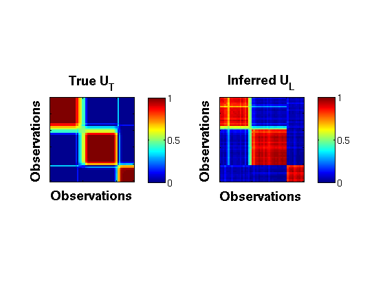
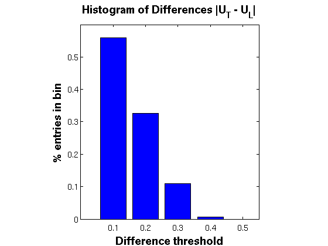

Bayesian Partial Membership
Generate samples for the Bayesian Partial Membership model using Hybrid Monte Carlo sampling.
Contents
Model Setup
Specify the data to use and the number of latent factors K. We generate 5000 samples. All HMC settings are specified in the configuration file.
dataName = 'bpmmodel'; model = 'bpm'; K = 3; seed = 10; [dataDir, outDir] = setupDir; fileName = sprintf([outDir '/%s/%s_%s_%d_%d'], dataName,model, 'hmc', K, seed); options = getConfigEFLVM(dataName, model); burnin = options.burnin; thin = options.thin; saveOut = options.saveout; setSeed(seed);
Load Data
data = getBinData(dataName, dataDir); [N,D] = size(data.X);
Run EFA
Load a previously stored results if available
disp('Running HMC ...'); if ~exist([fileName,'.mat'],'file') %exptEFLVM(dataName,model,K, seed); inferFun = @inferBPM_hmc; predFun = @predProbBPM_mcmc; % Run HMC for few steps postDist = inferFun(data, options, K); % Save if saveOut, save(fileName, 'postDist', 'seed'); end % Test error if isfield(data,'miss') % only test if testing data exists [teErr, rmse, pHat] = predFun(data, postDist.samples, K, burnin, thin); if saveOut save(fileName,'teErr', 'rmse','-append'); end; end; end; res = load(fileName);
Running HMC ...
Posterior Analysis
1. Comparing true vs inferred partial memberships
figure; [S,LL] = size(res.postDist.samples); gg = zeros(N,N); burnin = 2000; thin = 50; rng = burnin:thin:S; for i = rng omega = res.postDist.samples(i,:); [~, ~, pi, ~] = extractParams_bpm(omega, K, N, D); gg = gg + pi*pi'; end; GG = gg/length(rng); TP = data.truePi*data.truePi'; r = 1; c = 2; h1 = subplot(r,c,1); imagesc(TP,[0 1]); title('True U_T','FontSize',14, 'FontWeight','bold') xlabel('Observations','FontSize',14, 'FontWeight','bold'); ylabel('Observations','FontSize',14, 'FontWeight','bold'); set(gca,'xticklabel',[],'yticklabel',[]); ht = colorbar('location','EastOutside'); set(ht,'FontSize',12); axis square; h2 = subplot(r,c,2); imagesc(GG,[0 1]); title('Inferred U_L','FontSize',14, 'FontWeight','bold') set(gca,'xticklabel',[],'yticklabel',[]); % colormap gray; xlabel('Observations','FontSize',14, 'FontWeight','bold'); ylabel('Observations','FontSize',14, 'FontWeight','bold'); ht = colorbar('location','EastOutside'); set(ht,'FontSize',12); axis square;
2. Histogram of Differences between above plots
figure; diff = abs(GG(:) - TP(:)); rng = 0.1:0.1:0.5; counts = histc(diff,rng); perc = counts./sum(counts); disp('Cumulative Histogram Table'); disp({'Perc. Values','Difference'}); disp([cumsum(perc)*100 rng']); % Print table instead bar(rng,perc,'FaceColor','b'); title('Histogram of Differences |U_T - U_L|','FontSize',14, 'FontWeight','bold'); set(gca,'xtick',rng,'xticklabel',rng, 'FontSize',12) xlim([0 0.55]); ylim([0 0.6]); set(gca,'xtick',rng); xlabel('Difference threshold','FontSize',14, 'FontWeight','bold'); ylabel('% entries in bin','FontSize',14, 'FontWeight','bold') daspect([1 1 1])
Cumulative Histogram Table
'Perc. Values' 'Difference'
56 0.1
88.571 0.2
99.429 0.3
100 0.4
100 0.5
 Shakir Mohamed, 2012